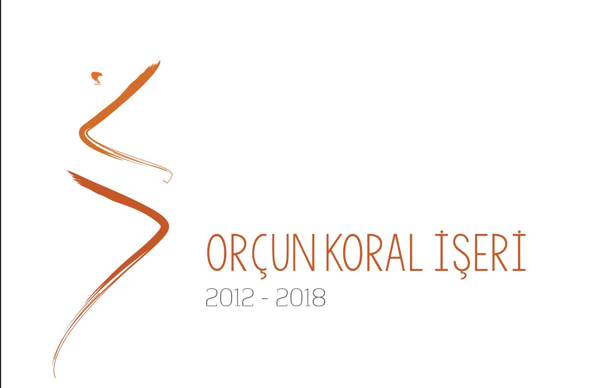
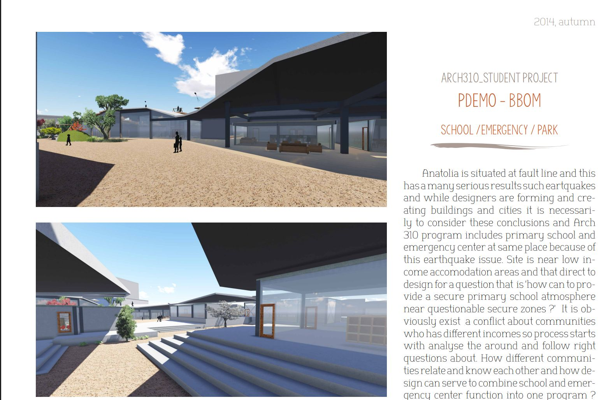
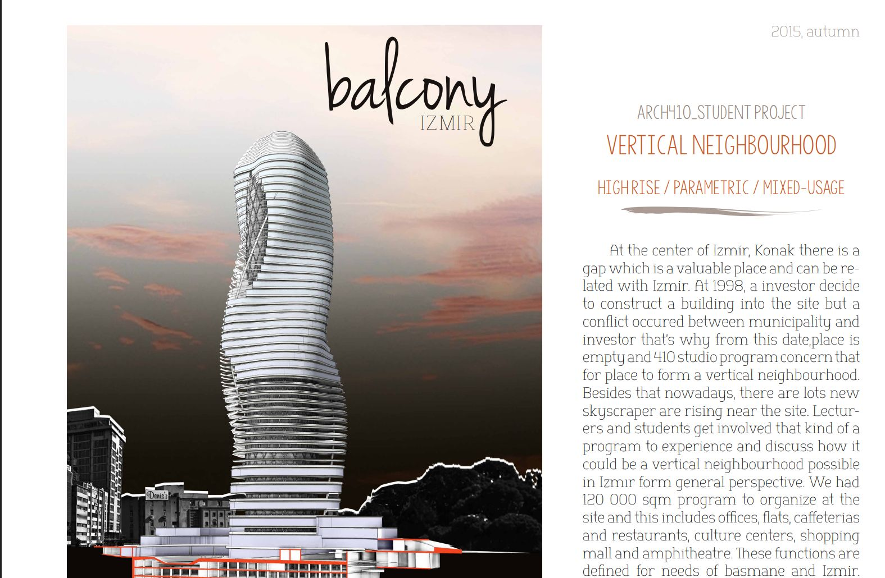
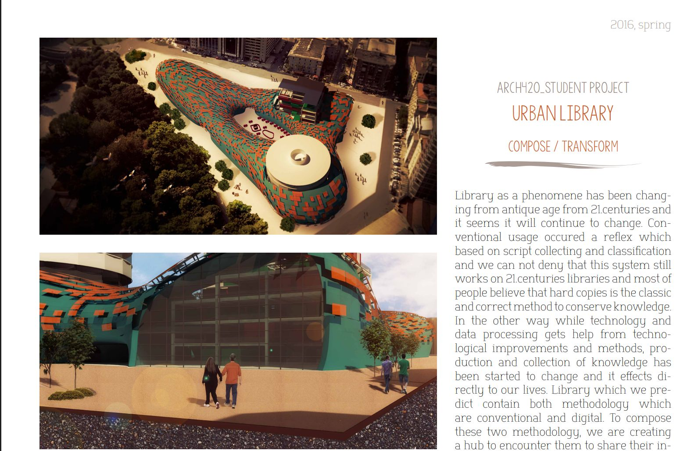
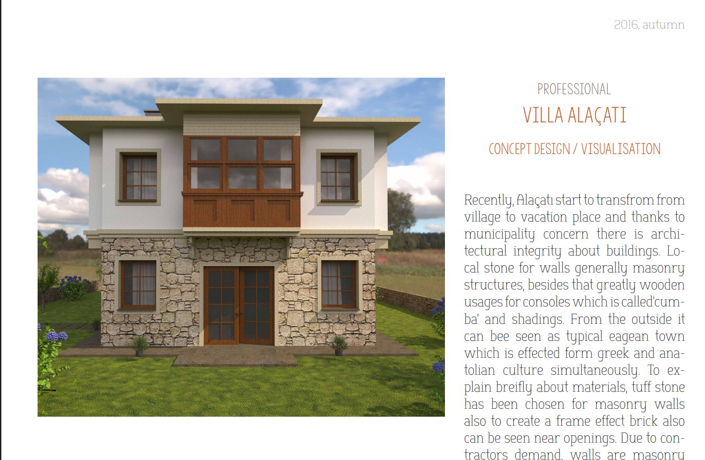
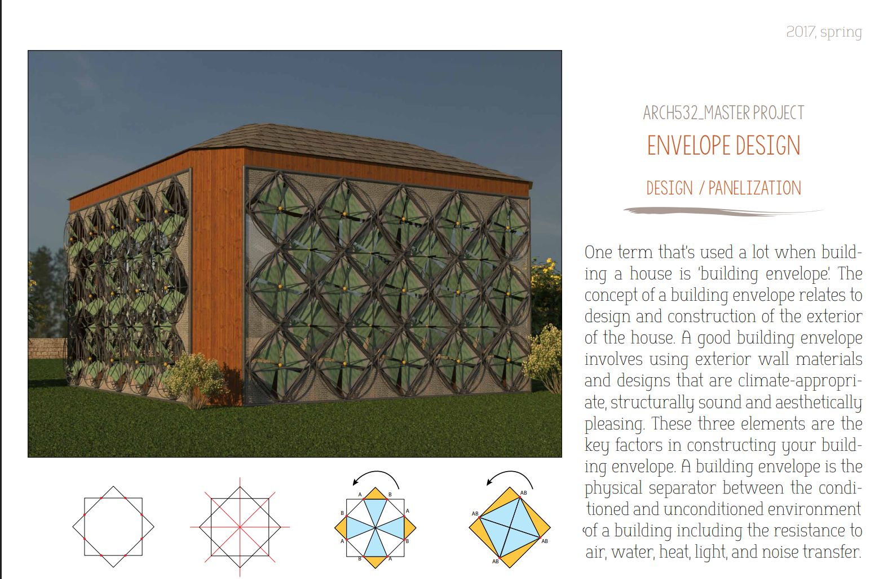

I recently dug up an old portfolio I'd put together, covering 2012–2018 — mostly studio work from my Bachelor in Architecture at Yaşar University (2012–2016), plus the first projects from the start of the Master's. It's very much a student portfolio — earnest, a little rough around the edges — but it's a fun record of how the work (and the writing) developed year over year, from a first-semester basic-design exercise to a full parametric envelope study. A few highlights below, in chronological order.
2012 — Wormhole (Basic Design)
A first-year basic design exercise in rule-based design: define a set of rules, a "database of knowledge," and an algorithm for applying those rules, then let a physical form emerge from cardboard and acetate through repeated folding steps.

2014 — PDEMO-BBOM (School / Emergency / Park)
A 3rd-year studio program (ARCH310) that paired a primary school with an emergency center on the same site — a direct response to Turkey's earthquake risk, sited near a low-income neighborhood to ask how a shared civic building could serve both everyday school life and crisis response.

2015 — Balcony İzmir (Vertical Neighbourhood)
A 4th-year studio (ARCH410) built around a real, long-vacant gap site at the center of İzmir's Konak district, left empty since a 1998 dispute between a developer and the municipality. The brief: 120,000 sqm of offices, flats, cafeterias, restaurants, culture centers, shopping, and an amphitheatre, organized as a parametric high-rise "vertical neighbourhood."

2016 — Urban Library (Compose / Transform)
A studio project (ARCH420) treating a library as a hub for both conventional and digital methods of knowledge-sharing — a "forum" space layered underneath a sculptural, tessellated envelope wrapping around a landmark form.

2016 — Villa Alaçatı (Professional)
Outside of studio, a concept design and visualization for a vacation house in Alaçatı, where local rules aim to preserve architectural continuity as the village transforms into a resort town — local stone masonry walls, and timber consoles ("cumba") drawing on the shared Greek/Anatolian building vocabulary of the area.

2017 — Envelope Design (into the Master's)
By the time this project came around I'd started the Master's program (ARCH532) — a panelization and building-envelope study working through how a responsive, climate-appropriate envelope geometry could be generated and rationalized into buildable panels.

The same Bachelor years also included two summers of running Tasarım Köyü İzmir — a student-organized design village in 2015 and 2016 — alongside the studio work above.
The full portfolio has quite a few more projects and workshop pieces than the ones above: download the complete PDF (2012–2018) →